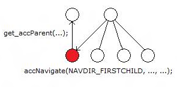

Calling accNavigate((Live Search), 0, NAVDIR_FIRSTCHILD) which returned (x-gadget:///gadget.html) returned the incorrect parent([NULL]) and not (Live Search)
Error
When get_accParent is called on the child element returned by accNavigate (using either the NAVDIR_FIRSTCHILD or NAVDIR_LASTCHILD navigation constants), the parent element returned does not match the parent element specified in the accNavigate call.

This issue can cause navigation problems for automated tools because traversing elements might be erratic and unpredictable.
An incorrect or invalid MSAA implementation.
Â
Â